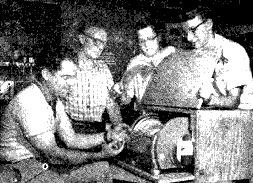
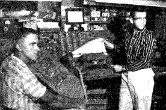

2023-11-08
The Hinsdale Doings, Thursday, August 27, 1959
What started out as "an innocent offer" to help a high school ham radio club has turned into a full fledged electronics laboratory in the basement of David M. Boyd Jr., 315 Ridge ave., Clarendon Hills.
There a group of scientifically minded youths, ranging in age from eighth graders to seniors in high school, can be found almost every night working on an ambitious project -- the construction of a digital computer.
Boyd, who is chief instrument engineer for Universal Oil Products Co., often stays up until 11:30 p.m. helping the boys with their work. He shrugs it off as something he asked for -- and as something everyone should be proud of.

YOUNG SCIENTISTS RECEIVE DRUM. Young scientists working on a digital computer in the basement of David M. Boyd, 315 Ridge ave., Clarendon Hills, inspect a magnetic drum valued at $10,000 which was given to them to further their interest in electronics. Shown, left to right, are Boyd, Russell Poppenhager, head of the science department at Hinsdale High school, Bob Getsla and Doug Clarke Jr., HTHS students.
For the enthusiasm of the boys in his basement is the answer to a question that troubled Boyd after a scientific mission to Germany in 1956.
Between sessions of a scientific meeting Boyd talked with scientists from Russia. He came away with the realization that Russia was putting more emphasis on scientific education than the United States.
"This was before the launching of Sputnik in the fall of 1957," Boyd recalls. Troubled by what he had learned, the Clarendon Hills scientist paid a visit to the science department at Hinsdale High school -- "just to see what was being done in our schools."
What he saw impressed him tremendously. "I found our high school has one of the best science programs in the country," Boyd said. "I don't think we have to take second place to anyone."
During his visit Boyd met some students who were setting up a ham radio operators club. "I told them I had lots of electronic equipment in my basement and they were welcome to whatever they wanted in building their radio sets."
The next night several boys came over. "They got to talking with me, and the conversation turned to computers. I game them a basic mathematical formula for a circuit that would add. They came back the next night with their own formula for a circuit that would subtract." That started what is now called "Boyd Sundown Industries."
For almost a year and a half the boys worked on elaborate panels of relays hooked up to an electric typewriter donated by Pannellit, Inc., Skokie.
Their work was inspected by Russell Poppenhager, head of the science department at Hinsdale High school, and Superintendent of Schools Dr. C. E. Spearman.
Dr. Spearman, who at one time taught high school science himself, said he was "tremendously impressed" with the work the boys were doing. He said the project was "one of the finest arguments for providing science instruction for the gifted child that I have ever seen."
Things have been happening rapidly since. Big companies engaged in electronics have donated thousands of dollars of equipment to the "boys in the basement."
Largest donation was the recent contribution of a magnetic drum, through the efforts of John Zisch of Western Springs, a salesman for McGraw Hill publishing company, from Bryant Chucking and Gearing, Springfield. Vermont. Boyd says the drum is valued at more than $10,000.
When they received the magnetic drum, with a computing speed 60,000 times greater than their first, rudimentary computer, the boys abandoned their first project, started out to build a bigger and better computer.
"You might say we just gave up a year and a half's work," Boyd says of the first computer which will now be used as a primer for beginners. "But on the other hand this kind of thing is something you really never expect to finish. The real enjoyment is just working on it."
While Boyd talked, Bob Getsla, 350 W. 55th St., and Doug Clarke Jr., 17 S. Thurlow St., worked on printed circuit boards. Bob will be a senior, Doug a junior at HTHS this fall.
Helping Boyd recall certain facts was Dave Lescohier, 56 Bonnie Lane, who will be a junior. Robbie Crooks, 309 Ridge ave., an eighth grader, was busy filing copper-plated boards.
Other members of the crew are Boyd's son, Gary, who will be a sophomore, and Jerry Masek, 425 S. Madison St., who will enter Massachusetts Institute of Technology in the fall.
Doug Harper, who will be a high school freshman, had to leave the basement behind a few days ago when his family moved to Fort Meyers, Fla. "He was just broken hearted," Boyd recalls.
While the sounds of scientific experimentation filled the basement and busy young hands toiled on electric relay systems, Boyd made an observation.
"The ironic thing about all this," he reminisced with a smile, "is the fact that when the boys got wrapped up in this project they forgot all about the ham radio club."

FIRST EFFORT OF COMPUTER CREW. Jerry Masek, left, and Gary Boyd show off the computer the boys constructed after 18 months effort. It will be abandoned now for a larger, more complex computer which the new drum will enable them to build. Their work has drawn national attention in the electronics industry.
Thanks to Bob Getsla for the clipping.
How I Got Started in Computers: building computers in Mr. Boyd's basement.
When the Russians visited Boyd's basement.